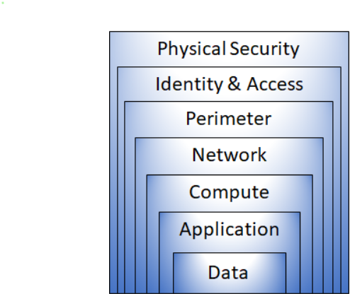
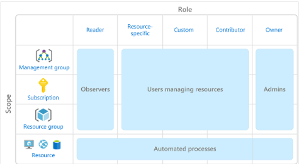

Documents
Microsoft azure part 1

Understand what cloud computing is:
Understand what advantages cloud computing has:
Discover what azure has to offer
- Cloud models
- Define cloud computing:
- cloud computing is the delivery of computing services—including servers, storage, databases, networking, software, analytics, and intelligence—over the Internet (“the cloud”) to offer faster innovation, flexible resources, and economies of scale. You typically pay only for cloud services you use, helping you lower your operating costs, run your infrastructure more efficiently, and scale as your business needs change.
- Public Cloud
- Private cloud
- Hybrid cloud
- Cloud Model Comparison
- Cloud Benefits
- Cloud services
Microsoft azure part 2

Core Azure Architectural Components
- The different region in which azure server runs on
- availablity Zone
- Availability zones are physically separate datacenters within an Azure region.
- Azure region pairs
- Each Azure region is always paired with another region within the same geography (such as US, Europe, or Asia) at least 300 miles away.
- Azure resource groups:
- VMS
- Azure Application Gateway instance
- Azure Cosmos DB instances
- core networking resources & benefits and usage of Virtual Network, VPN Gateway, and ExpressRoute.
- azure virtual network fundamentals
- Isolation and segmentation
- Internet communications
- Communicate between Azure resources
- Communicate with on-premises resources
- Route network traffic
- Filter network traffic
- Azure Storage Services
- Azure Blob storage
- Serving images or documents directly to a browser.
- Storing files for distributed access.
- Streaming video and audio.
- Storing data for backup and restore, disaster recovery, and archiving.
- Storing data for analysis by an on-premises or Azure-hosted service.
- Storing up to 8 TB of data for virtual machines
- Azure Files
- Azure Files makes it easier to migrate those applications that share data to Azure.
- Store configuration files on a file share and access them from multiple VMs.
- Write data to a file share, and process or analyze the data later.
Microsoft azure part 3

types of Azure IoT service:
- IoT Hub
- a managed service that's hosted in the cloud and that acts as a central message hub for bi-directional communication between your IoT application and the devices it manages.
- Azure IoT Central
- builds on top of IoT Hub by adding a dashboard that allows you to connect, monitor, and manage your IoT devices.
- Azure Sphere
- creates an end-to-end, highly secure IoT solution for customers that encompasses everything from the hardware and operating system on the device to the secure method of sending messages from the device to the message hub.
Azure AI Services
- Azure Machine Learning
- is a platform for making predictions. It consists of tools and services that allow you to connect to data to train and test models to find one that will most accurately predict a future result.
- Azure Cognitive Services
- provides prebuilt machine learning models that enable applications to see, hear, speak, understand, and even begin to reason.
- Azure Bot Service
- platforms for creating virtual agents that understand and reply to questions just like a human. Azure Bot Service is a bit different from Azure Machine Learning and Azure Cognitive Services in that it has a specific use case.
Azure serverless technology
- Azure Functions
- host a single method or function by using a popular programming language in the cloud that runs in response to an event.
- Azure Logic Apps
- low-code/no-code development platform hosted as a cloud service. The service helps you automate and orchestrate tasks, business processes, and workflows when you need to integrate apps, data, systems, and services across enterprises or organizations. Logic Apps simplifies how you design and build scalable solutions, whether in the cloud, on-premises, or both. This solution covers app integration, data integration, system integration, enterprise application integration (EAI), and business-to-business (B2B) integration.
- Business Technology Solutions
- Azure DevOps Services
- Azure Repos is a centralized source-code repository where software development, DevOps engineering, and documentation professionals can publish their code for review and collaboration.
- Azure Boards is an agile project management suite that includes Kanban boards, reporting, and tracking ideas and work from high-level epics to work items and issues.
- Azure Pipelines is a CI/CD pipeline automation tool.
- Azure Artifacts is a repository for hosting artifacts, such as compiled source code, which can be fed into testing or deployment pipeline steps.
- Azure Test Plans is an automated test tool that can be used in a CI/CD pipeline to ensure quality before a software release.
- GitHub and GitHub Actions
- GitHub Actions enables workflow automation with triggers for many lifecycle events.
- One such example would be automating a CI/CD toolchain.
- Azure DevTest Labs
-
Azure DevTest Labs provides an automated means of managing the process of building, setting up, and tearing down virtual machines (VMs) that contain builds of your software projects.
Microsoft azure part 4

Protect against security threats on Azure
- Azure Security Center
- Monitor security settings across on-premises and cloud workloads.
- Automatically apply required security settings to new resources as they come online.
- Provide security recommendations that are based on your current configurations, resources, and networks.
- Continuously monitor your resources and perform automatic security assessments to identify potential vulnerabilities before those vulnerabilities can be exploited.
- Use machine learning to detect and block malware from being installed on your virtual machines (VMs) and other resources. You can also use adaptive application controls to define rules that list allowed applications to ensure that only applications you allow can run.
- Detect and analyze potential inbound attacks and investigate threats and any post-breach activity that might have occurred.
- Provide just-in-time access control for network ports. Doing so reduces your attack surface by ensuring that the network only allows traffic that you require at the time that you need it to.
- Azure Sentinel
- Azure Sentinel is Microsoft's cloud-based SIEM system. It uses intelligent security analytics and threat analysis.
- Azure Key Vault
- Azure Key Vault is a centralized cloud service for storing an application's secrets in a single, central location. It provides secure access to sensitive information by providing access control and logging capabilities.
- Manage secrets
- Manage encryption keys
- Manage SSL/TLS certificates
- Store secrets backed by hardware security modules (HSMs)
- Secure network connectivity on Azure
- Layers of defense in depth 
- The physical security layer is the first line of defense to protect computing hardware in the datacenter.
- The identity and access layer controls access to infrastructure and change control.
- The perimeter layer uses distributed denial of service (DDoS) protection to filter large-scale attacks before they can cause a denial of service for users.
- The network layer limits communication between resources through segmentation and access controls.
- The compute layer secures access to virtual machines.
- The application layer helps ensure that applications are secure and free of security vulnerabilities.
- The data layer controls access to business and customer data that you need to protect.
- Azure Firewall
- Azure Firewall is a managed, cloud-based network security service that helps protect resources in your Azure virtual networks.
- Features:
- Built-in high availability.
- Unrestricted cloud scalability.
- Inbound and outbound filtering rules.
- Inbound Destination Network Address Translation (DNAT) support
- Azure Monitor logging.
- Azure DDoS Protection
- Protect from DDoS attacks
- DDoS (distributed denial of service) A distributed denial of service attack attempts to overwhelm and exhaust an application's resources, making the application slow or unresponsive to legitimate users.
- Azure DDoS Protection identifies the attacker's attempt to overwhelm the network and blocks further traffic from them, ensuring that traffic never reaches Azure resources.
Microsoft azure part 5

Secure access to your applications by using Azure identity services
- Azure Active Directory
- provides identity services that enable your users to sign in and access both Microsoft cloud applications and cloud applications that you develop.
- Build a cloud governance strategy on Azure
- Azure role-based access control
- 
- scope includes:
- A management group (a collection of multiple subscriptions).
- A single subscription.
- A resource group.
- A single resource.
- Examine privacy, compliance, and data protection standards on Azure
- compliance categories are available on Azure
- Access the Microsoft Privacy Statement, the Online Services Terms, and the Data Protection Addendum
- Microsoft Privacy Statement
- Online Services Terms
- Data Protection Addendum

Microsoft azure part 6

Plan and manage your Azure costs
- TCO Calculator
- provides identity services that enable your users to sign in and access both Microsoft cloud applications and cloud applications that you develop.
- step 1: Define your workloads
- servers
- Databases
- Storage
- Networking
- step 2: Adjust assumptions
- Electricity price per kilowatt hour (KWh)
- Hourly pay rate for IT administration
- Network maintenance cost as a percentage of network hardware and software costs
- Step 3: View the report
- set the time frame in which you want

- Find the right SLA (service-level agreements)
Education
Temasek Polytechnic
Diploma in Information Technology
GPA: 3.98
April 2021 - May 2024
Kaplan Higher Education Institute
Diploma in Information Technology
March 2018 - December 2018
Skills
Programming Languages & Tools
Interests
Apart from being a web developer, I love to play the drums, I teach drums during the weekends
It is refreshing to teach young children drums, and meeting new people just enlightens my life
Awards & Certifications
- AY 2021/2022 Director's List
- AY 2021 Temasek Polytechnic Scholarship
- Basic Profiency in KNIME Analytics Platform